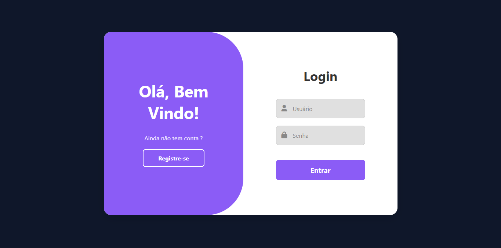
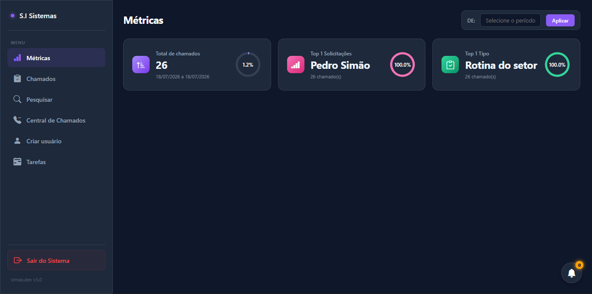
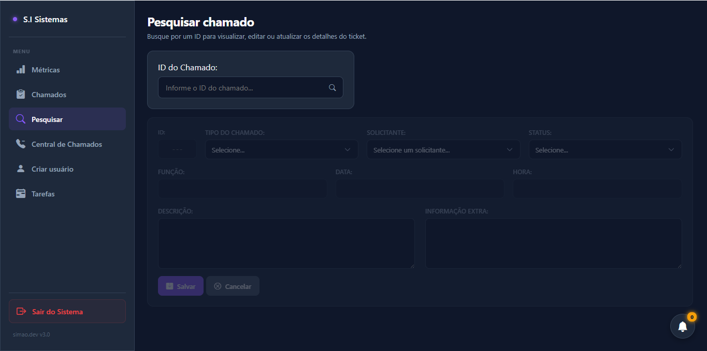
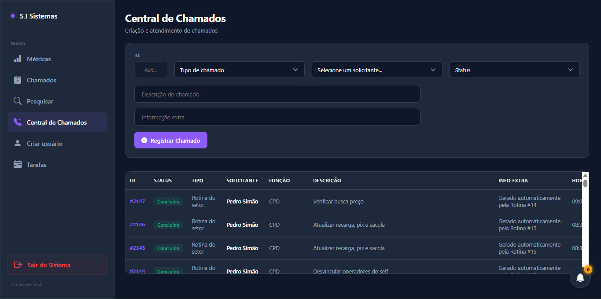
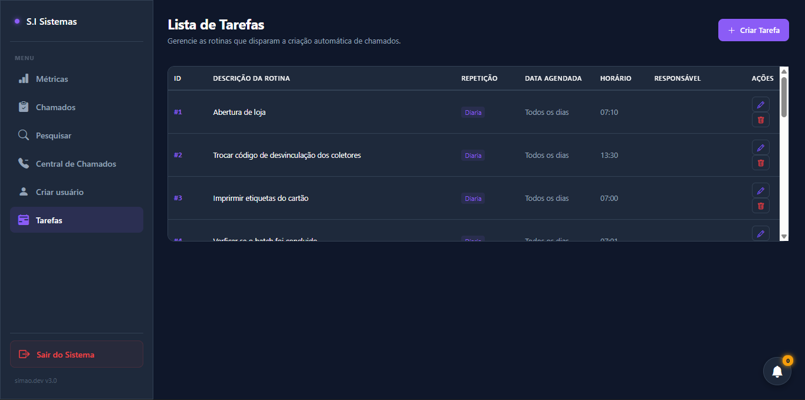

Concluído.
Portal interno de chamados
Um ecossistema robusto e responsivo desenvolvido para gerenciamento, monitoramento e automação de chamados técnicos. O sistema possui dois níveis de acesso (Administrador e Portal do Cliente), painel de métricas em tempo real e um motor de disparo automático para tarefas de rotina estruturadas.





// 01 VISÃO GERAL
Portal do Cliente: Área restrita para usuários comuns abrirem solicitações de requisição e acompanharem o histórico de seus chamados em tempo real de forma isolada. Atendimento Administrativo: Interface para triagem de chamados, alteração de status e registro de atendimentos (como solicitações recebidas via telefone). Painel de Métricas Dinâmico: Gráficos de progresso em anel (progress-ring) integrados à biblioteca Flatpickr para análise de volumetria por intervalo de datas personalizado. Motor de Rotinas Automáticas: Agendamento de tarefas diárias ou mensais que geram chamados automaticamente na planilha principal baseados na sessão do usuário responsável. Responsividade Ultra-Rígida: Layout adaptável otimizado tanto para desktops quanto para dispositivos móveis (visual slim compacto estilo Android).
// 02 FUNCIONALIDADES
- Validação de Credenciais
- Controle Dinâmico de Sessão
- Restrição Automática de Escopo
- Abertura de Requisições
- Histórico Filtrado e Isolado
- Triagem de Ocorrências
- Lista Relacional Dinâmica
- Atualização Rápida por Clique
- Busca Direta no Banco
- Destravamento Ativo para Edição
- Filtro de Período Cronológico
- Cálculo Estatístico Automatizado
- Controle de Colaboradores
- Campos Condicionais Dinâmicos
- Remoção de Contas
- Programação de Gatilhos
- Badges em Tempo Real
DETALHES
FUNÇÃO
Desenvolverdor full-stack
ANO
2024
STATUS
Em desenvolvimento
TECNOLOGIAS
- JavaScript
- HTML5
- CSS3
- Google apps script